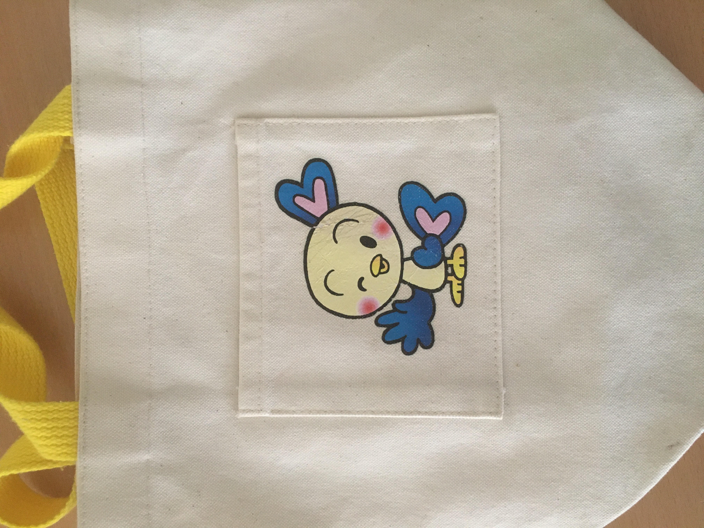
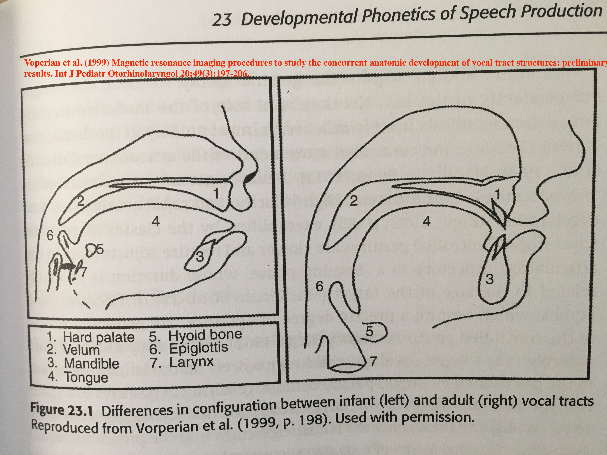

本ページについて

『音声学者、娘とことばの不思議に飛び込む』（朝日出版社）の補足資料ページです。
推薦文
--------------------------------------------------------------------------------------
この本は“ちべじょんばん”（むちゃオモローwな意）である！！
てんてんがり（カンカン照りの）日に
しゅわしゅわをぐぴっと飲み干し
ひっくり返って読みゃハマっちゃうんだから、もう。
ちゃんお薦め♡げっちゅぷり。
「子育て本としてもウナズキpt満載で非常に勉強になります。」
一青窈さん（歌手）
--------------------------------------------------------------------------------------
川原先生は、音声学・音韻論の両分野において、多くの論文を出版しつづけ、学界への影響力も大きい研究者である。この本では、そんな著者が、日本語の音の仕組みを解説しながら、読者を今までになかった楽しい知的な旅へと招待する。筆者の娘たちがどのように言語を修得していくかを切り口として、本書は学問的正確性を損ねることなく、読みものとしても本当に楽しいものに仕上がっている。音声学・音韻論の入門授業の教科書及び副読本などにも使えるであろう。
Prof. Junko Ito, Distinguished Professor Emerita of Linguistics, University of California, Santa Cruz
--------------------------------------------------------------------------------------
この本は“ちべじょんばん”（むちゃオモローwな意）である！！
てんてんがり（カンカン照りの）日に
しゅわしゅわをぐぴっと飲み干し
ひっくり返って読みゃハマっちゃうんだから、もう。
ちゃんお薦め♡げっちゅぷり。
「子育て本としてもウナズキpt満載で非常に勉強になります。」
一青窈さん（歌手）
--------------------------------------------------------------------------------------
川原先生は、音声学・音韻論の両分野において、多くの論文を出版しつづけ、学界への影響力も大きい研究者である。この本では、そんな著者が、日本語の音の仕組みを解説しながら、読者を今までになかった楽しい知的な旅へと招待する。筆者の娘たちがどのように言語を修得していくかを切り口として、本書は学問的正確性を損ねることなく、読みものとしても本当に楽しいものに仕上がっている。音声学・音韻論の入門授業の教科書及び副読本などにも使えるであろう。
Prof. Junko Ito, Distinguished Professor Emerita of Linguistics, University of California, Santa Cruz
--------------------------------------------------------------------------------------
本書で紹介した動画へのリンク
正誤表
（第1刷）。ｐ101。「んだよー」は仙台方言と東京方言が混ざったような少し変な言い方らしいです。「んだー」の方が正しい仙台方言でした。「んだがらー」も良いそうです。素敵ですね。
（第1刷）。p123。「ダイア」を「ダイヤ」……「ダイヤ」の方が一般的な呼び方らしいので、最適な例ではなかったかもしれません。「さいあく」を「さいやく」と発音する、という方が良い例だったかもしれません。
（第1刷）。p129。「ミワちゃん（38歳）」＝＞「ミヤちゃん（38歳）」
（ぴっぴは特に長女とはほとんど毎日お世話になっていた時期もあり、ぴっぴカードは４枚ほどコンプリートした覚えがあります。そんなお世話になったぴっぴに対して誤植を犯してしまったことは、忸怩たる思いがあります。重ねてお詫び申し上げます。）
（第1刷）。p123。「ダイア」を「ダイヤ」……「ダイヤ」の方が一般的な呼び方らしいので、最適な例ではなかったかもしれません。「さいあく」を「さいやく」と発音する、という方が良い例だったかもしれません。
（第1刷）。p129。「ミワちゃん（38歳）」＝＞「ミヤちゃん（38歳）」

（第2刷）。p236。「東京都立大学」＝＞「東京都市大」。「ぴっぴ」のもと常連として、このような誤植を犯してしまい、「ぴっぴ」の関係者の方々に不快な思いをさせてしまったことを伏してお詫び申しあげます。（ぴっぴは特に長女とはほとんど毎日お世話になっていた時期もあり、ぴっぴカードは４枚ほどコンプリートした覚えがあります。そんなお世話になったぴっぴに対して誤植を犯してしまったことは、忸怩たる思いがあります。重ねてお詫び申し上げます。）
メディアカバー
日経新聞記事
高橋源一郎の飛ぶ教室: 子育て中の音声学者がいざなう音とことばの世界.
サンデー毎日Sunday Library書評
日経新聞書評
毎日新聞書評
朝日新聞書評
国際教育ナビ
J-CASTニュース
高橋源一郎の飛ぶ教室: 子育て中の音声学者がいざなう音とことばの世界.
サンデー毎日Sunday Library書評
日経新聞書評
毎日新聞書評
朝日新聞書評
国際教育ナビ
J-CASTニュース
追加・補足事項
あまりに専門的になるかな……と感じ、本書では触れなかった項目に関する簡単な解説です。主に、本格的に音声学を学びたいと思った方へ補足事項になります。
☆☆☆校了後に見つかってしまった新たな興味深い例のまとめはこちら（note）☆☆☆
【第3話】「後舌母音で唇が丸まる」という現象の背後には、「もともと低めの第二フォルマントをさらに下げる」という役割もあるかもしれません。哺乳行動に基づく説明も興味深いですが、こちらの可能性もまだまだ説得力があるように感じます。詳細は拙著『「あ」は「い」より大きい！？」や『ビジュアル音声学』をご参照ください。
【第4話】 本書ではカバーできませんでしたが、早口言葉・空耳アワー・いいまつがいの分析も音声学の観点からは面白いです。
【第4話】「自然にしていれば声帯は振動するのだから、有声音のほうが無声音よりも発音しやすい」というようなことを述べましたが、有声阻害音の場合、特有の空気力学的な問題が生じます（第14話参照）。私の娘のように、子どもが無声音の音を有声音として発音しているように聞こえる場合、本当に正確に言うのであれば、「無声音ほどはっきりと声帯が開いておらず、f0（声の高さ）の調整も十分になされていないので、大人には有声音に聞こえてしまう音となっている。ただし子ども自信は有声音を発音しているつもりではないのかもしれない」といった回りくどい言い方になるかもしれません。有声性に関しては、私が本気で語りだすと止まらなくなるので、本書では簡略化しました。興味がある方は、川原繁人・高田三枝子・松浦年男・松井理直（2018） 有声性の研究はなぜ重要なのか. 音声研究 22: 56-68をご参照ください。
【第5話、図5-1】「観測値を期待値で割った値」を用いることに関しては近年疑問視する声があがっています。より統計的に強固な方法として注目されているのが「最大エントロピー法」です。詳しくはこちらの論文（未出版）をご覧ください。
【第5話、図5-2】 肺臓気流子音表・母音表（ダウンロードして自由にお使いください）。
【第5話、図5-3】IPAの母音表では舌の高さ（口腔の開き度合い）を4段階区別しますが、日本語を含めほとんどの言語では３段階の区別で十分です。IPAはあくまで決まり事（ルール）であり、絶対的な真実を表しているわけではありません。時々私はIPAのシステムに文句をつけたくなるのですが、本書ではできるだけその気持ちを抑えました（笑）
【第5話、図5-4】日本語の[ʑi]と[zu]は状況によっては破擦音として発音されることもあります。実際にどんな状況で破擦音になるかはとても複雑なので、本書では割愛しました。詳しくは次の論文を参照してください。Maekawa, K. (2010) Coarticulatory reinterpretation of allophonic variation: Corpus-based analysis of /z/ in spontaneous Japanese. Journal of Phonetics 38: 360-374.
【第6話】
乳児と大人の口腔構造の違い。大人の口腔は口蓋帆付近で急激に曲がっているのに対して、幼児の口腔はなだらかなカーブを描く。大人は喉頭（larynx)、舌骨（hyoid)、epiglottis（喉頭蓋）の位置が相対的に低く、軟口蓋と喉頭蓋の距離が長い。大人になるにつれ舌自体の高さも大きくなる。参考：Rose Y. et al. (2022) Developmental phonetics of speech perception. In Cambridge Handbook of Phonetics.
【第8話】「なぜ子どもは母音を超えて子音同化を起こしてしまうことに良い説明はない」としましたが、Sam Tilsenという学者がとある仮説を発表しています。専門的すぎるので、本書では説明できませんでしたが、イメージだけお伝えすると「ある調音点を使うということは、他の調音点を使わないという抑制的な動作を行う必要もあるが、子どもはまだ、その『他の調音点を使わない』という抑制的指令が上手く働かないのでは」ともなるでしょうか。関連する彼の論文はこちらになります。Tilsen, S. (2019) Motoric mechanisms for the emergence of non-local phonological patterns. Frontiers in Psychology.
【第8話】関連して、母音を超えた子音の調音点同化がコンゴ共和国で話されているNgbakaという言語で観察されるという論文も近年出版されました。ただ、この論文で論じられている同化は非常に限定的で、子どもの発話で観察されるような明確な同化とは言い難いと思います。また個人的には、この論文で使われている統計手法にも数点、疑問が残るため、決定的な証拠ではないと思っております。Denis, N. (2019) Long-distance major place harmony. Phonology 36: 573-604.
【第11話】「音から単語を切り出すという作業」には遷移確率（transitional probability)という情報が使われていることもよく知られているのですが、この統計的な概念を楽しく簡単に説明するのが難しいと判断し、本書では触れませんでした。この議論に関しては山のように専門論文が出版されています。古典的な論文として、以下のものを挙げておきます。Saffran, J. R., R. N. Aslin & E. L. Newport (1996). Statistical learning of 8-month-old infants. Science 274: 1926-1928.
【コラム6】:「旦那が妻の仕事のために引っ越さない問題」の提唱者はこの方です。
【対談】 喉頭の位置によって声の高さが変わるデモ動画（ボイストレーナーの長塚全さん）
【対談】「母音が無声化するのは、声帯を開く、閉じる、開くの動作が面倒で、ふたつの開く動作がひとつにまとまってしまう」というのも実はかなり簡略化した言い方です（対談での解説ですので、ご容赦ください）。無声化はこのような「受け身」的な理由で起こるのではなく、日本人話者は、しっかりと声帯の開きかたをコントロールして無声化を起こしているという証拠もあります。詳細に興味がある方は以下の論文をご参照ください。Shaw, J. & S. Kawahara (2021) More on the articulation of devoiced [u] in Tokyo Japanese: effects of surrounding consonants. Phonetica 78(5/6): 467-513
☆☆☆校了後に見つかってしまった新たな興味深い例のまとめはこちら（note）☆☆☆
【第3話】「後舌母音で唇が丸まる」という現象の背後には、「もともと低めの第二フォルマントをさらに下げる」という役割もあるかもしれません。哺乳行動に基づく説明も興味深いですが、こちらの可能性もまだまだ説得力があるように感じます。詳細は拙著『「あ」は「い」より大きい！？」や『ビジュアル音声学』をご参照ください。
【第4話】 本書ではカバーできませんでしたが、早口言葉・空耳アワー・いいまつがいの分析も音声学の観点からは面白いです。
【第4話】「自然にしていれば声帯は振動するのだから、有声音のほうが無声音よりも発音しやすい」というようなことを述べましたが、有声阻害音の場合、特有の空気力学的な問題が生じます（第14話参照）。私の娘のように、子どもが無声音の音を有声音として発音しているように聞こえる場合、本当に正確に言うのであれば、「無声音ほどはっきりと声帯が開いておらず、f0（声の高さ）の調整も十分になされていないので、大人には有声音に聞こえてしまう音となっている。ただし子ども自信は有声音を発音しているつもりではないのかもしれない」といった回りくどい言い方になるかもしれません。有声性に関しては、私が本気で語りだすと止まらなくなるので、本書では簡略化しました。興味がある方は、川原繁人・高田三枝子・松浦年男・松井理直（2018） 有声性の研究はなぜ重要なのか. 音声研究 22: 56-68をご参照ください。
【第5話、図5-1】「観測値を期待値で割った値」を用いることに関しては近年疑問視する声があがっています。より統計的に強固な方法として注目されているのが「最大エントロピー法」です。詳しくはこちらの論文（未出版）をご覧ください。
【第5話、図5-2】 肺臓気流子音表・母音表（ダウンロードして自由にお使いください）。
【第5話、図5-3】IPAの母音表では舌の高さ（口腔の開き度合い）を4段階区別しますが、日本語を含めほとんどの言語では３段階の区別で十分です。IPAはあくまで決まり事（ルール）であり、絶対的な真実を表しているわけではありません。時々私はIPAのシステムに文句をつけたくなるのですが、本書ではできるだけその気持ちを抑えました（笑）
【第5話、図5-4】日本語の[ʑi]と[zu]は状況によっては破擦音として発音されることもあります。実際にどんな状況で破擦音になるかはとても複雑なので、本書では割愛しました。詳しくは次の論文を参照してください。Maekawa, K. (2010) Coarticulatory reinterpretation of allophonic variation: Corpus-based analysis of /z/ in spontaneous Japanese. Journal of Phonetics 38: 360-374.
【第6話】

乳児と大人の口腔構造の違い。大人の口腔は口蓋帆付近で急激に曲がっているのに対して、幼児の口腔はなだらかなカーブを描く。大人は喉頭（larynx)、舌骨（hyoid)、epiglottis（喉頭蓋）の位置が相対的に低く、軟口蓋と喉頭蓋の距離が長い。大人になるにつれ舌自体の高さも大きくなる。参考：Rose Y. et al. (2022) Developmental phonetics of speech perception. In Cambridge Handbook of Phonetics.
【第8話】「なぜ子どもは母音を超えて子音同化を起こしてしまうことに良い説明はない」としましたが、Sam Tilsenという学者がとある仮説を発表しています。専門的すぎるので、本書では説明できませんでしたが、イメージだけお伝えすると「ある調音点を使うということは、他の調音点を使わないという抑制的な動作を行う必要もあるが、子どもはまだ、その『他の調音点を使わない』という抑制的指令が上手く働かないのでは」ともなるでしょうか。関連する彼の論文はこちらになります。Tilsen, S. (2019) Motoric mechanisms for the emergence of non-local phonological patterns. Frontiers in Psychology.
【第8話】関連して、母音を超えた子音の調音点同化がコンゴ共和国で話されているNgbakaという言語で観察されるという論文も近年出版されました。ただ、この論文で論じられている同化は非常に限定的で、子どもの発話で観察されるような明確な同化とは言い難いと思います。また個人的には、この論文で使われている統計手法にも数点、疑問が残るため、決定的な証拠ではないと思っております。Denis, N. (2019) Long-distance major place harmony. Phonology 36: 573-604.
【第11話】「音から単語を切り出すという作業」には遷移確率（transitional probability)という情報が使われていることもよく知られているのですが、この統計的な概念を楽しく簡単に説明するのが難しいと判断し、本書では触れませんでした。この議論に関しては山のように専門論文が出版されています。古典的な論文として、以下のものを挙げておきます。Saffran, J. R., R. N. Aslin & E. L. Newport (1996). Statistical learning of 8-month-old infants. Science 274: 1926-1928.
【コラム6】:「旦那が妻の仕事のために引っ越さない問題」の提唱者はこの方です。
【対談】 喉頭の位置によって声の高さが変わるデモ動画（ボイストレーナーの長塚全さん）
【対談】「母音が無声化するのは、声帯を開く、閉じる、開くの動作が面倒で、ふたつの開く動作がひとつにまとまってしまう」というのも実はかなり簡略化した言い方です（対談での解説ですので、ご容赦ください）。無声化はこのような「受け身」的な理由で起こるのではなく、日本人話者は、しっかりと声帯の開きかたをコントロールして無声化を起こしているという証拠もあります。詳細に興味がある方は以下の論文をご参照ください。Shaw, J. & S. Kawahara (2021) More on the articulation of devoiced [u] in Tokyo Japanese: effects of surrounding consonants. Phonetica 78(5/6): 467-513